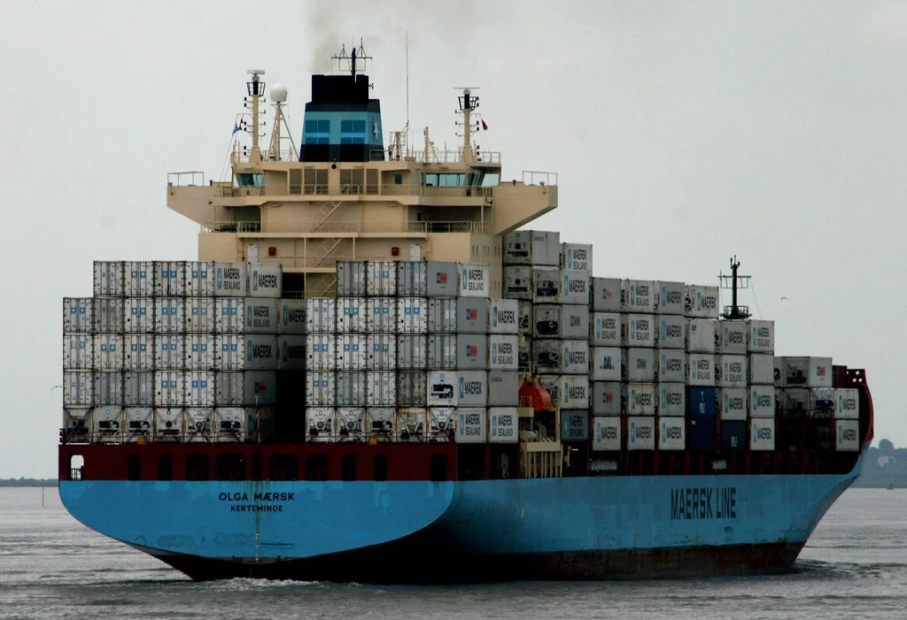

이란, 美·이스라엘 선박 호르무즈 통항 제한 추진…美 "통행 막을 권한 없어"
이란이 미국과 이스라엘 등 이른바 '적대국' 선박의 호르무즈 해협 통항을 제한하는 법안을 다시 추진하고 나섰다. 7일 외신 보도에 따르면 이 법안은 현재 이란 의회 국가안보위원회에서 심의 중이다. 법안에는 미국과 이스라엘을 비롯해 이란이 적대국으로 규정한 국가의 선박에 대해 호르무즈 해협 통항을 금지하는 내용이 담겼다. 이란 측이 유사한 통항 제한 움직임을 보인 것은 이번이 처음이 아니지만, 이번 법안은 규제 범위를 선박에서 화물까지 확대했다는 점에서 이전보다 강도가 세졌다는 평가가 나온다. 법안이 국가안보위원회 심의를 통과하면 본회의 표결 절차를 거쳐야 한다.
이란 의회 외교·국가안보위원회의 모하마드 코사리 부위원장은 "이란산 석유 판매에 어떤 방해가 발생하면 호르무즈 해협은 분명히 폐쇄될 것"이라고 말했다. 이란산 원유 수출에 대한 제재나 압박이 계속될 경우, 호르무즈 해협 통항 자체를 지렛대로 삼겠다는 뜻을 분명히 한 셈이다. 호르무즈 해협은 전 세계 원유 해상 물동량의 상당 부분이 지나는 길목으로 꼽히며, 페르시아만에서 생산된 원유와 천연가스가 세계 각지로 수출되는 핵심 관문 역할을 해왔다.

미국은 즉각 반박에 나섰다. 미국은 호르무즈 해협이 국제 수로인 만큼 어떠한 통항 제한도 인정할 수 없다는 입장을 밝혔다. 미군 중부사령부(CENTCOM)도 호르무즈 해협 남쪽 항로는 모든 상선에 계속 개방돼 있다고 재확인했다. 사실상 이란의 법안 추진과 무관하게 기존 통항 원칙을 그대로 유지하겠다는 뜻으로 풀이된다. 미국 측은 통행료 지불 여부와 무관하게 해당 해협에서 이란과 어떠한 별도 합의도 하지 않겠다는 입장을 거듭 밝혀온 것으로 전해졌다.
이란의 이번 움직임은 미국·이스라엘과의 긴장이 이어지는 가운데 나왔다. 이란은 앞서도 미국·이스라엘 동맹국 선박의 호르무즈 입출항을 불허하겠다고 밝힌 바 있어, 이번 법안은 기존 강경 기조를 제도화하려는 시도로 해석된다. 다만 법안이 실제 국가안보위원회 문턱을 넘어 본회의에서 처리될지, 처리되더라도 실행 단계까지 이어질지는 아직 불투명하다. 국가안보위원회 심의 단계에 머물러 있는 만큼 최종 입법까지는 다소 시간이 걸릴 수 있다는 관측도 나온다.

국제 에너지 시장은 이 같은 소식에 예민하게 반응하는 분위기다. 실제로 최근 이란의 해협 봉쇄 가능성이 부각됐을 당시 국제유가(WTI)는 장중 70달러 중후반대까지 뛰어올랐고, 일각에서는 배럴당 100달러 돌파 가능성까지 거론된 바 있다. 호르무즈 해협을 둘러싼 지정학적 리스크가 부각될 때마다 유가와 액화천연가스(LNG) 가격이 선제적으로 출렁이는 패턴이 반복되고 있는 셈이다. 원유 트레이더들 사이에서는 실제 봉쇄 여부와 별개로, 법안 처리 움직임 자체가 공급 불안 심리를 자극할 수 있다는 우려가 나온다.
한국 경제에도 이 같은 리스크는 남의 일이 아니다. 국내로 들어오는 원유와 LNG의 상당량이 호르무즈 해협을 거치는 만큼, 통항 차질이 현실화하면 에너지 조달 비용과 물류비 부담이 커질 수 있다. 한국은행 역시 중동 지역의 지정학적 긴장이 국제유가 상승으로 이어질 경우 국내 소비자물가에 상승 압력이 커지고 경제 성장에는 하방 위험으로 작용할 수 있다고 분석하고 있다. 정유·화학 업계는 물론 항공·해운 등 에너지 비용에 민감한 업종들도 관련 동향을 예의주시하는 것으로 전해졌다. 이란 법안의 실제 처리 여부와 미국의 대응 수위에 시장의 관심이 쏠린다.